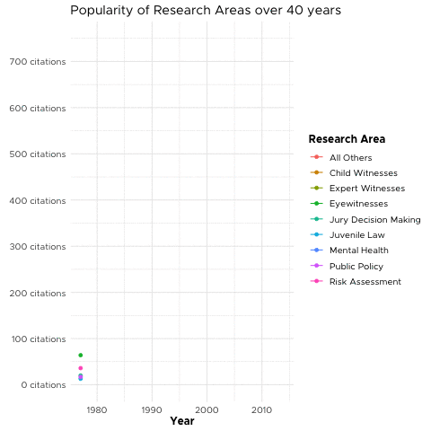

| journal | 2017||2022 |
|---|---|
| American Psychologist | |
| Applied Cognitive Psychology | |
| Behavioral Sciences & the Law | |
| Behavioral and Brain Sciences | |
| Harvard Law Review | |
| Law and Human Behavior | |
| Law and Social Inquiry | |
| Law and Society Review | |
| Legal & Criminological Psych | |
| Psych, Public Policy & Law | |
| Psychological Bulletin | |
| Psychology, Crime and Law |
Law-Psychology Research in the U.S
Guest Lecture
Emma Marshall, JD, MA
Law-Psychology Research in the U.S
Emma Marshall, JD, MA
Plan for Today
Previous Research Reviews
Selective reviews with narrow focus
Experimental forensic psychology Moore & Finn (1986)
Jury decision making Devine et al (2000)
Cross race effect Meissner & Brigham (2001)
Scientific Review Papers
Approved by AP-LS committee
Eyewitness Identification Procedures: Recommendations for lineups and Photospreads Wells et al (1998)
Police-induced Confessions: Risk Factors and Recommendations Kassin et al (2010)
Policy and Procedure Recommendations for the Collection and Preservation of Eyewitness Identification Evidence Constanzo & Levett (2020)
Sources of Law in the U.S.
Civil Law
Criminal Law
Law in the U.S.
State vs Federal Law
State vs Federal Law
40 Years of Law & Human Behavior
- Official journal of APLS
- Peer reviewed
- Multidisciplinary forum
- Range of articles:
- original research
- reviews
- theory papers
Journal Impact
Method
Comprehensive review
Four research assistants
- Overlapped on n = 25%
- On average, each coded 450 articles (range: 447-455)
- N = 1320 articles from 1977-2014 (vol. 38, issue 3)
- Overlapped on n = 25%
Removed non-research items
Coded Variables
| General Information |
|---|
| Research topic(s) |
| Citations (#) |
Coded Variables
| Research Method |
|---|
| Sample |
| Specific research method |
Coded Variables
| Connection to Law |
|---|
| Area of law |
| Reference to case law |
| Reference to statute(s) |
| Reference to state or federal constitutional amendments |
| Reference to specific policy |
Coded Variables
| Connection to Psychology |
|---|
| Area of psychology |
| Application of psychological theory |
Primary Research Areas

“all other” research areas
Types of “Witnesses”
 Eyewitness Memory ~ 12%
Eyewitness Memory ~ 12%
Types of “Witnesses”
Child Witnesses ~4%
Expert Witnesses ~4%
Research Areas Over Time ⏳
Child Witnesses
Expert Witnesses
Eyewitness Memory
Jury Decision Making
Juvenile Law
Mental Health
Public Policy
Risk Assessment
⏳ Witnesses

⏳ Risk Assessment

⏳ Mental health

⏳ Public Policy

⏳ Juvenile Law

⏳ Jury decision-making

⏳ Eyewitness 📈 > Juries 📉

⏳ Citations Over Time
Most Cited Articles
Risk Assessment
Hanson & Thornton (2000)
Eyewitness memory
Wells et al (1998)
Top 20 Articles
| Author(s) (year) | Research Area | Number citations | |
|---|---|---|---|
| 2017 | 2022 | ||
Hanson and Thornton (2000)
Improving risk assessments for sex offenders: a comparison of three actuarial scales |
Risk assessment; sex offenders | ||
Wells et al. (1998)
Eyewitness identification procedures: Recommendations for lineups and photospreads |
Eyewitnesses and memory | ||
Bornstein (1999)
The ecological validity of jury simulations: Is the jury still out? |
Jury or judicial decision making | ||
Rice et al. (1992)
An evaluation of a maximum security therapeutic community for psychopaths and other mentally disordered offenders |
Psychopathy; mentally ill offenders and psych. Patients | ||
Steinberg and Cauffman (1996)
Maturity of judgment in adolescence: Psychosocial factors in adolescent decision making |
Competency and criminal responsibility; juvenile justice | ||
Harris et al. (1991)
Psychopathy and violent recidivism |
Psychopathy; criminal offending/recidivism | ||
Loftus et al. (1987)
Some facts about 'weapon focus' |
Eyewitnesses and memory | ||
Grisso and Appelbaum (1995)
The MacArthur Treatment Competence Study. III---Abilities of Patients to consent to psychiatric and medical treatments |
Competency and criminal responsibility | ||
Rice and Harris (1997)
Cross-validation and extension of the Violence Risk Appraisal Guide for child molesters and rapists |
Risk assessment; sex offenders | ||
Rice and Harris (2005)
Comparing effect sizes in follow-up studies: ROC area, Cohen's d, and r |
General psych and law | ||
Grisso et al. (2003)
Juveniles' competence to stand trial: A comparison of adolescents' and adults' capacities as trial defendants |
Juvenile justice; competency and criminal responsibility | ||
Goodman and Reed (1986)
Age differences in eyewitness testimony |
Eyewitnesses and memory | ||
Slovic et al. (2000)
Violence risk assessment and risk communication: The effects of using actual cases, providing instruction, and employing probability versus frequency formats |
Risk assessment | ||
Kassin et al. (2010)
Police-induced confessions: Risk factors and recommendations |
Confessions and interrogations | ||
Appelbaum and Grisso (1995)
The MacArthur Treatment Competence Study. I---Mental Illness and competence to consent to treatment |
Competency and criminal responsibility | ||
Leistico et al. (2008)
A large-scale meta-analysis relating the hare measures of psychopathy to antisocial conduct |
Risk assessment; psychopathy | ||
Seagrave and Grisso (2002)
Adolescent development and the measurement of juvenile psychopathy |
Psychopathy; juvenile justice | ||
Steblay (1992)
A meta-analytic review of the weapon focus effect |
Eyewitnesses and memory | ||
Deffenbacher et al. (2004)
A meta-analytic review of the effects of high stress on eyewitness memory |
Eyewitnesses and memory | ||
Baker and Emery (1993)
When every relationship is above average--- Perceptions and expectations of divorce at the time of marriage |
Family issues | ||
Sample Used

Study Methodology

Area of Law

Reference to Legal Doctrine

Area of Psychology

Did article apply psychological theory?
Yes
No
Application of Psychological Theory

Summary
- Most articles focused on similar topics
- Few professional samples
- Mostly criminal law
- Limited to social or cognitive psychology
- Room for growth!
Questions?